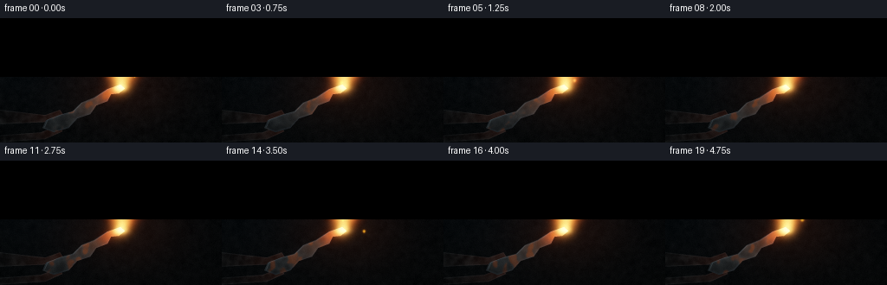
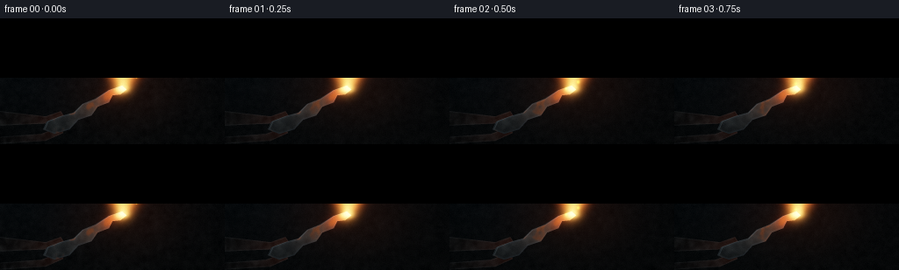
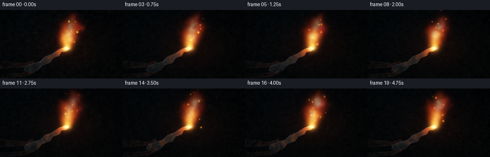
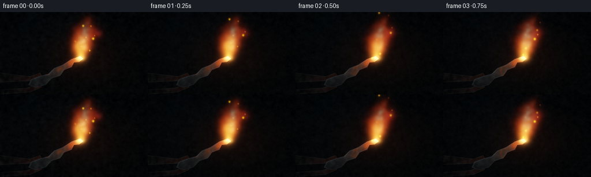
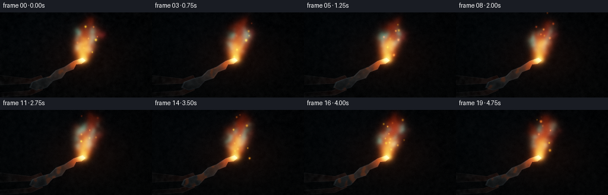
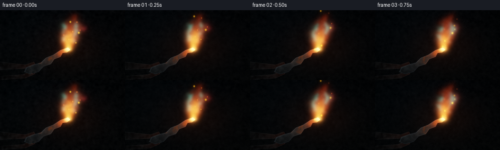
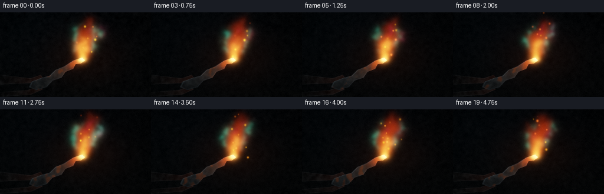
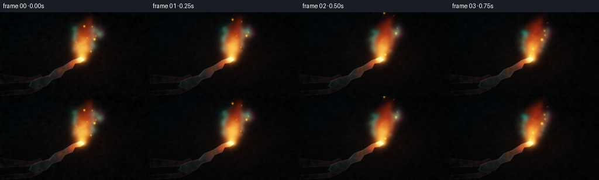
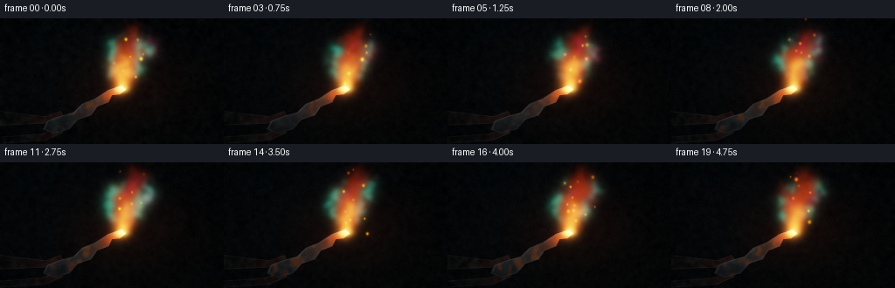
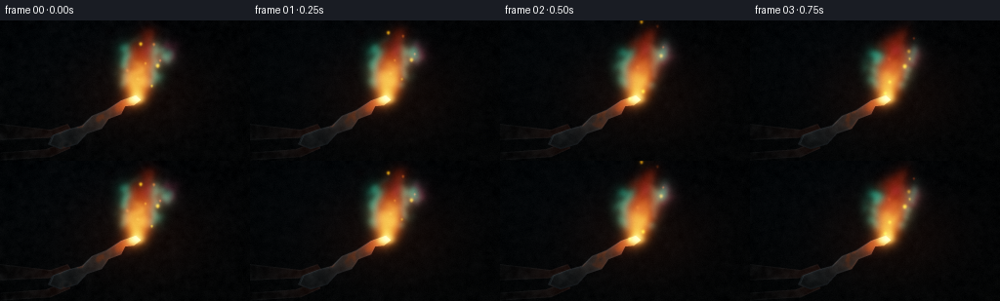

CODING AGENTS AS PIXEL WORLD MODELS
traex/DeepSeek-V4.1-Flash · material_0010
点击播放 · 原生 RGB 像素
逐轮保存的候选
回放视频、检查图与代码变化。
每份候选均可单独播放。实际图片检查记录在下方工具轨迹中。
候选 01播放与检查图
点击播放 · 原生 RGB 像素

展开代码变化
--- 上一保存版本
+++ 本次保存版本
@@ -0,0 +1,301 @@
+from pathlib import Path
+
+import cv2
+import numpy as np
+from PIL import Image, ImageDraw
+from scipy.ndimage import distance_transform_edt, gaussian_filter
+
+import artifact_io
+
+
+ROOT = Path(__file__).resolve().parent
+W, H = 256, 144
+FPS = 4.0
+N = 20
+SS = 3
+RW, RH = W * SS, H * SS
+
+
+def smoothstep(a, b, x):
+ u = np.clip((x - a) / (b - a), 0.0, 1.0)
+ return u * u * (3.0 - 2.0 * u)
+
+
+def make_noise_volume(shape, rng, sigmas):
+ field = rng.standard_normal(shape, dtype=np.float32)
+ field = gaussian_filter(field, sigma=sigmas, mode="reflect")
+ field -= field.mean()
+ field /= max(float(field.std()), 1e-6)
+ return field
+
+
+def resized_slice(volume, index, width, height):
+ frame = volume[index]
+ return cv2.resize(frame, (width, height), interpolation=cv2.INTER_CUBIC)
+
+
+def polygon_mask(points, width=RW, height=RH):
+ image = Image.new("L", (width, height), 0)
+ draw = ImageDraw.Draw(image)
+ scaled = [(int(round(x * SS)), int(round(y * SS))) for x, y in points]
+ draw.polygon(scaled, fill=255)
+ return np.asarray(image, dtype=np.float32) / 255.0
+
+
+def tongue_field(x, y, noise_a, noise_b, x0, tip_y, height, width, bend, curl, phase, t):
+ v = (tip_y - y) / height
+ active = (v >= -0.03) & (v <= 1.18)
+ vv = np.clip(v, 0.0, 1.18)
+ center = (
+ x0
+ + bend * vv**1.28
+ + curl * np.sin(2.2 * np.pi * vv + phase + 0.58 * t) * vv**0.82
+ + 1.4 * np.sin(4.9 * np.pi * vv - 0.33 * t + phase)
+ * np.sin(np.pi * np.clip(vv, 0.0, 1.0))
+ )
+ center += 4.4 * noise_a * vv**1.15 + 1.6 * noise_b * vv
+ profile = np.sin(np.pi * np.clip(vv, 0.0, 1.0)) ** 0.58
+ half = width * (0.075 + 0.925 * profile)
+ half *= 0.83 + 0.27 * smoothstep(-0.6, 1.1, noise_b)
+ lateral = np.abs(x - center) / np.maximum(half, 0.35)
+ body = np.exp(-1.75 * lateral**2.05)
+ body *= smoothstep(-0.015, 0.055, vv)
+ body *= 1.0 - smoothstep(0.72, 1.055, vv + 0.12 * noise_a)
+ body *= active
+ return body.astype(np.float32), vv.astype(np.float32), center.astype(np.float32), half.astype(np.float32)
+
+
+def add_spot(target, cx, cy, radius, color):
+ x0 = max(0, int(cx - radius * 2.2))
+ x1 = min(target.shape[1], int(cx + radius * 2.2) + 2)
+ y0 = max(0, int(cy - radius * 2.2))
+ y1 = min(target.shape[0], int(cy + radius * 2.2) + 2)
+ if x0 >= x1 or y0 >= y1:
+ return
+ yy, xx = np.mgrid[y0:y1, x0:x1]
+ spot = np.exp(-((xx - cx) ** 2 + (yy - cy) ** 2) / max(radius * radius, 0.05))
+ for channel in range(3):
+ target[y0:y1, x0:x1, channel] += spot * color[channel]
+
+
+def render_frame(index, coarse, fine):
+ t = index / FPS
+ noise_a = resized_slice(coarse, index, RW, RH)
+ noise_b = resized_slice(fine, index, RW, RH)
+ yy, xx = np.mgrid[0:RH, 0:RW].astype(np.float32)
+ x = xx / SS
+ y = yy / SS
+
+ tip_x, tip_y = 140.5, 79.0
+ radial = np.sqrt(((x - 143.0) / 105.0) ** 2 + ((y - 76.0) / 72.0) ** 2)
+ warm_glow = np.exp(-2.9 * radial**2)
+ cool_glow = np.exp(-(((x - 60.0) / 150.0) ** 2 + ((y - 12.0) / 95.0) ** 2))
+ vertical = np.clip(y / H, 0.0, 1.0)[..., None]
+ bg = np.empty((RH, RW, 3), dtype=np.float32)
+ bg[:] = np.array([0.004, 0.007, 0.010], dtype=np.float32)
+ bg += vertical * np.array([0.006, 0.008, 0.007], dtype=np.float32)
+ bg += warm_glow[..., None] * np.array([0.060, 0.018, 0.005], dtype=np.float32)
+ bg += cool_glow[..., None] * np.array([0.002, 0.010, 0.016], dtype=np.float32)
+ bg += (0.0025 + 0.003 * (noise_a - noise_a.min()) / (noise_a.max() - noise_a.min() + 1e-6))[..., None]
+
+ smoke_v = (104.0 - y) / 130.0
+ smoke_vv = np.clip(smoke_v, 0.0, 1.0)
+ smoke_center = (
+ 142.0
+ + 24.0 * smoke_vv**1.25
+ + 7.0 * np.sin(4.4 * smoke_vv + 0.34 * t)
+ + 6.0 * noise_a * smoke_vv
+ )
+ smoke_width = 8.0 + 30.0 * smoke_vv
+ smoke = np.exp(-1.5 * ((x - smoke_center) / smoke_width) ** 2)
+ smoke *= smoothstep(0.02, 0.24, smoke_vv) * (1.0 - smoothstep(0.55, 1.03, smoke_vv))
+ smoke *= np.clip(0.46 + 0.62 * noise_b + 0.20 * np.sin(3.0 * smoke_vv - 0.5 * t), 0.0, 1.0)
+ smoke_alpha = np.clip(0.075 * smoke, 0.0, 0.16)[..., None]
+ smoke_color = np.array([0.055, 0.073, 0.072], dtype=np.float32)
+ scene = bg * (1.0 - smoke_alpha) + smoke_color * smoke_alpha
+
+ main, v_main, center_main, half_main = tongue_field(
+ x, y, noise_a, noise_b, tip_x - 1.0, tip_y, 76.0, 17.5, 15.0, 5.0, 0.45, t
+ )
+ left, v_left, center_left, half_left = tongue_field(
+ x, y, noise_a, noise_b, tip_x - 3.0, tip_y + 1.0, 59.0, 11.5, -4.0, 4.4, 2.10, t
+ )
+ right, v_right, center_right, half_right = tongue_field(
+ x, y, noise_a, noise_b, tip_x + 1.5, tip_y + 0.5, 66.0, 12.0, 24.0, 5.8, 4.20, t
+ )
+ tail, v_tail, center_tail, half_tail = tongue_field(
+ x, y, noise_a, noise_b, tip_x + 2.0, tip_y + 2.0, 51.0, 6.2, 33.0, 4.3, 5.45, t
+ )
+ core_plume, v_core, center_core, half_core = tongue_field(
+ x, y, noise_a, noise_b, tip_x, tip_y, 37.0, 8.2, 4.5, 2.8, 1.25, t
+ )
+
+ flicker = 1.0 + 0.060 * np.sin(4.8 * t + 0.3) + 0.035 * np.sin(10.7 * t + 1.2)
+ body = (main + 0.78 * left + 0.82 * right + 0.42 * tail) * flicker
+ body = np.clip(body, 0.0, 1.6)
+ core = core_plume * (1.05 + 0.05 * np.sin(7.1 * t))
+ base_heat = np.exp(
+ -((x - tip_x) / 9.5) ** 2 - ((y - (tip_y + 1.0)) / 6.5) ** 2
+ )
+ core = np.clip(core + 0.9 * base_heat * smoothstep(0.2, 1.0, main + left + right), 0.0, 1.7)
+
+ height_ratio = np.clip((tip_y - y) / 78.0, 0.0, 1.0)
+ warm = np.empty((RH, RW, 3), dtype=np.float32)
+ warm[:] = np.array([2.55, 0.52, 0.055], dtype=np.float32)
+ warm *= (1.0 - 0.56 * height_ratio)[..., None]
+ warm += core[..., None] * np.array([3.35, 2.12, 0.72], dtype=np.float32)
+ warm += (base_heat * (main + left + right))[..., None] * np.array([2.5, 1.5, 0.42], dtype=np.float32)
+
+ side_dx = np.abs(x - center_main) / np.maximum(half_main, 0.7)
+ cool_edge = np.clip((0.55 - side_dx) * 1.8, 0.0, 1.0)
+ cool_edge *= smoothstep(0.10, 0.32, v_main) * (1.0 - smoothstep(0.60, 0.88, v_main))
+ cool_edge *= np.clip(0.42 + 0.74 * noise_b, 0.0, 1.0)
+ cool_edge *= main
+ cool = cool_edge[..., None] * np.array([0.04, 1.42, 1.18], dtype=np.float32)
+
+ magenta_edge = np.clip((0.62 - np.abs(x - center_right) / np.maximum(half_right, 0.7)) * 2.1, 0.0, 1.0)
+ magenta_edge *= smoothstep(0.42, 0.70, v_right) * (1.0 - smoothstep(0.82, 1.03, v_right))
+ magenta_edge *= np.clip(0.30 + 0.85 * noise_a, 0.0, 1.0) * right
+ magenta = magenta_edge[..., None] * np.array([1.05, 0.035, 0.29], dtype=np.float32)
+
+ flame_emission = body[..., None] * warm + 1.05 * cool + 0.72 * magenta
+ flame_emission += 0.18 * tail[..., None] * np.array([0.95, 0.08, 0.36], dtype=np.float32)
+
+ shard_points = [
+ (49.0, 127.0),
+ (53.0, 118.0),
+ (69.0, 112.0),
+ (84.0, 108.0),
+ (94.0, 98.0),
+ (109.0, 92.0),
+ (124.0, 82.0),
+ (139.0, 76.5),
+ (144.0, 81.5),
+ (137.0, 87.0),
+ (128.0, 88.0),
+ (124.0, 96.0),
+ (111.0, 101.0),
+ (104.0, 111.0),
+ (89.0, 116.0),
+ (79.0, 127.0),
+ (62.0, 132.0),
+ ]
+ iron_mask = polygon_mask(shard_points)
+ iron_dist = distance_transform_edt(iron_mask > 0.5) / SS
+ iron_texture = np.clip(0.46 + 0.22 * noise_a + 0.12 * noise_b, 0.0, 1.0)
+ rust = smoothstep(0.52, 0.84, iron_texture + 0.16 * np.sin(x * 0.41 + y * 0.23))
+ steel = np.empty((RH, RW, 3), dtype=np.float32)
+ steel[:] = np.array([0.075, 0.090, 0.098], dtype=np.float32)
+ steel += iron_texture[..., None] * np.array([0.060, 0.064, 0.062], dtype=np.float32)
+ steel = steel * (1.0 - 0.52 * rust[..., None]) + rust[..., None] * np.array([0.20, 0.073, 0.025], dtype=np.float32)
+ lower = smoothstep(0.30, 1.0, np.clip((y - 105.0) / 25.0, 0.0, 1.0))
+ steel *= (1.0 - 0.30 * lower[..., None])
+ flame_light = np.exp(-((x - 136.0) / 44.0) ** 2 - ((y - 83.0) / 31.0) ** 2)
+ steel += flame_light[..., None] * np.array([0.30, 0.105, 0.024], dtype=np.float32)
+ bevel = (1.0 - smoothstep(0.25, 2.6, iron_dist))
+ steel += bevel[..., None] * np.array([0.025, 0.035, 0.045], dtype=np.float32)
+
+ tong_upper = polygon_mask([(-8, 105), (52, 112), (69, 106), (73, 112), (57, 120), (-8, 123)])
+ tong_lower = polygon_mask([(-8, 136), (47, 132), (68, 124), (72, 131), (52, 140), (-8, 144)])
+ tong_mask = np.clip(tong_upper + tong_lower, 0.0, 1.0)
+ tong_dist = distance_transform_edt(tong_mask > 0.5) / SS
+ tong_tex = np.clip(0.36 + 0.26 * noise_b, 0.0, 1.0)
+ tong_color = np.array([0.022, 0.028, 0.031], dtype=np.float32)
+ tong_color = tong_color + tong_tex[..., None] * np.array([0.026, 0.027, 0.027], dtype=np.float32)
+ tong_rim = (1.0 - smoothstep(0.2, 1.8, tong_dist))[..., None]
+ tong_color += tong_rim * np.array([0.035, 0.041, 0.044], dtype=np.float32)
+ tong_light = np.exp(-((x - 88.0) / 52.0) ** 2 - ((y - 119.0) / 31.0) ** 2)
+ tong_color += tong_light[..., None] * np.array([0.095, 0.025, 0.008], dtype=np.float32)
+
+ total_alpha = np.clip(iron_mask + tong_mask, 0.0, 1.0)
+ iron_color = np.where(iron_mask[..., None] > 0.5, steel, tong_color)
+ scene = scene * (1.0 - total_alpha[..., None]) + iron_color * total_alpha[..., None]
+
+ edge_highlight = np.zeros((RH, RW), dtype=np.float32)
+ top_line = [(51.5, 126.0), (55.0, 117.5), (70.0, 111.8), (84.5, 107.8), (94.5, 97.8),
+ (109.0, 91.7), (124.0, 82.0), (138.5, 77.3)]
+ line_img = Image.new("L", (RW, RH), 0)
+ line_draw = ImageDraw.Draw(line_img)
+ line_draw.line([(int(px * SS), int(py * SS)) for px, py in top_line], fill=120, width=SS)
+ edge_highlight = np.asarray(line_img, dtype=np.float32) / 255.0
+ scene += edge_highlight[..., None] * np.array([0.16, 0.19, 0.20], dtype=np.float32)
+
+ hot_core = np.exp(-((x - 140.2) / 6.8) ** 2 - ((y - 80.0) / 4.5) ** 2)
+ hot_core *= np.clip(iron_mask + 0.40 * base_heat, 0.0, 1.0)
+ heat_ring = np.exp(-((x - 136.0) / 15.0) ** 2 - ((y - 84.0) / 11.0) ** 2) * iron_mask
+ tip_emission = hot_core[..., None] * np.array([5.6, 3.5, 1.2], dtype=np.float32)
+ tip_emission += heat_ring[..., None] * np.array([1.35, 0.25, 0.025], dtype=np.float32)
+ scene += tip_emission
+
+ rng = np.random.default_rng(812)
+ spark_count = 48
+ spark_x0 = tip_x + rng.uniform(-8.0, 24.0, spark_count)
+ spark_y0 = tip_y - rng.uniform(-3.0, 40.0, spark_count)
+ spark_t0 = rng.uniform(-2.2, 5.0, spark_count)
+ spark_life = rng.uniform(0.65, 1.85, spark_count)
+ spark_vx = rng.uniform(-8.0, 12.0, spark_count)
+ spark_vy = rng.uniform(18.0, 43.0, spark_count)
+ spark_phase = rng.uniform(0.0, 2.0 * np.pi, spark_count)
+ spark_size = rng.uniform(0.75, 1.8, spark_count)
+ spark_intensity = rng.uniform(0.65, 2.1, spark_count)
+ spark_layer = np.zeros_like(scene)
+ for sx, sy, t0, life, vx, vy, phase, size, power in zip(
+ spark_x0, spark_y0, spark_t0, spark_life, spark_vx, spark_vy,
+ spark_phase, spark_size, spark_intensity
+ ):
+ age = t - t0
+ if age < 0.0 or age > life:
+ continue
+ life_fade = (1.0 - age / life) ** 0.8
+ px = sx + vx * age + 2.1 * np.sin(age * 8.3 + phase)
+ py = sy - vy * age + 1.2 * np.sin(age * 5.7 + phase)
+ hue = 0.5 + 0.5 * np.sin(phase + 1.4)
+ color = np.array([1.7, 0.42 + 0.62 * hue, 0.045 + 0.08 * (1.0 - hue)], dtype=np.float32)
+ add_spot(spark_layer, px * SS, py * SS, max(0.85, size) * SS, color * power * life_fade)
+ trail_color = color * (0.20 * power * life_fade)
+ add_spot(spark_layer, px * SS, (py + 1.4) * SS, max(0.65, size * 0.65) * SS, trail_color)
+ scene += spark_layer
+
+ total_emission = flame_emission + tip_emission + spark_layer
+ bloom_wide = gaussian_filter(total_emission, sigma=(19.0, 19.0, 0.0), mode="reflect")
+ bloom_tight = gaussian_filter(total_emission, sigma=(7.0, 7.0, 0.0), mode="reflect")
+ scene += bloom_wide * 0.31 + bloom_tight * 0.20
+
+ vignette_radius = np.sqrt(((x - W * 0.50) / (W * 0.63)) ** 2 + ((y - H * 0.50) / (H * 0.68)) ** 2)
+ scene *= np.clip(1.06 - 0.32 * vignette_radius**2, 0.52, 1.0)[..., None]
+ scene *= 1.10
+ mapped = 1.0 - np.exp(-np.maximum(scene, 0.0))
+ mapped = np.power(np.clip(mapped, 0.0, 1.0), 0.88)
+ mapped += 0.004 * noise_b[..., None]
+
+ frame = cv2.resize(mapped, (W, H), interpolation=cv2.INTER_AREA)
+ grain_rng = np.random.default_rng(5000 + index)
+ grain = grain_rng.normal(0.0, 0.0042, (H, W, 1)).astype(np.float32)
+ frame = np.clip(frame + grain, 0.0, 1.0)
+ return np.clip(np.rint(frame * 255.0), 0, 255).astype(np.uint8)
+
+
+def main():
+ coarse_rng = np.random.default_rng(3301)
+ fine_rng = np.random.default_rng(9173)
+ coarse = make_noise_volume((N + 5, 56, 96), coarse_rng, (1.25, 1.8, 1.8))
+ fine = make_noise_volume((N + 5, 106, 188), fine_rng, (0.85, 1.35, 1.35))
+
+ frames = np.stack([render_frame(i, coarse, fine) for i in range(N)])
+ artifact_io.save(frames, ROOT)
+
+ writer = cv2.VideoWriter(
+ str(ROOT / "video.mp4"),
+ cv2.VideoWriter_fourcc(*"mp4v"),
+ FPS,
+ (W, H),
+ )
+ if writer.isOpened():
+ for frame in frames:
+ writer.write(cv2.cvtColor(frame, cv2.COLOR_RGB2BGR))
+ writer.release()
+ print(f"Rendered {N} frames at {W}x{H}, {FPS:g} fps")
+
+
+if __name__ == "__main__":
+ main()
候选 02播放与检查图
点击播放 · 原生 RGB 像素


展开代码变化
--- 上一保存版本
+++ 本次保存版本
@@ -54,7 +54,7 @@
* np.sin(np.pi * np.clip(vv, 0.0, 1.0))
)
center += 4.4 * noise_a * vv**1.15 + 1.6 * noise_b * vv
- profile = np.sin(np.pi * np.clip(vv, 0.0, 1.0)) ** 0.58
+ profile = np.maximum(np.sin(np.pi * np.clip(vv, 0.0, 1.0)), 0.0) ** 0.58
half = width * (0.075 + 0.925 * profile)
half *= 0.83 + 0.27 * smoothstep(-0.6, 1.1, noise_b)
lateral = np.abs(x - center) / np.maximum(half, 0.35)
@@ -141,24 +141,24 @@
height_ratio = np.clip((tip_y - y) / 78.0, 0.0, 1.0)
warm = np.empty((RH, RW, 3), dtype=np.float32)
- warm[:] = np.array([2.55, 0.52, 0.055], dtype=np.float32)
- warm *= (1.0 - 0.56 * height_ratio)[..., None]
- warm += core[..., None] * np.array([3.35, 2.12, 0.72], dtype=np.float32)
- warm += (base_heat * (main + left + right))[..., None] * np.array([2.5, 1.5, 0.42], dtype=np.float32)
+ warm[:] = np.array([2.20, 0.34, 0.026], dtype=np.float32)
+ warm *= (1.0 - 0.62 * height_ratio)[..., None]
+ warm += core[..., None] * np.array([3.25, 1.72, 0.42], dtype=np.float32)
+ warm += (base_heat * (main + left + right))[..., None] * np.array([2.35, 1.22, 0.24], dtype=np.float32)
side_dx = np.abs(x - center_main) / np.maximum(half_main, 0.7)
cool_edge = np.clip((0.55 - side_dx) * 1.8, 0.0, 1.0)
cool_edge *= smoothstep(0.10, 0.32, v_main) * (1.0 - smoothstep(0.60, 0.88, v_main))
cool_edge *= np.clip(0.42 + 0.74 * noise_b, 0.0, 1.0)
cool_edge *= main
- cool = cool_edge[..., None] * np.array([0.04, 1.42, 1.18], dtype=np.float32)
+ cool = cool_edge[..., None] * np.array([0.025, 1.62, 1.38], dtype=np.float32)
magenta_edge = np.clip((0.62 - np.abs(x - center_right) / np.maximum(half_right, 0.7)) * 2.1, 0.0, 1.0)
magenta_edge *= smoothstep(0.42, 0.70, v_right) * (1.0 - smoothstep(0.82, 1.03, v_right))
magenta_edge *= np.clip(0.30 + 0.85 * noise_a, 0.0, 1.0) * right
- magenta = magenta_edge[..., None] * np.array([1.05, 0.035, 0.29], dtype=np.float32)
-
- flame_emission = body[..., None] * warm + 1.05 * cool + 0.72 * magenta
+ magenta = magenta_edge[..., None] * np.array([1.15, 0.028, 0.34], dtype=np.float32)
+
+ flame_emission = body[..., None] * warm + 1.30 * cool + 0.92 * magenta
flame_emission += 0.18 * tail[..., None] * np.array([0.95, 0.08, 0.36], dtype=np.float32)
shard_points = [
@@ -263,9 +263,9 @@
vignette_radius = np.sqrt(((x - W * 0.50) / (W * 0.63)) ** 2 + ((y - H * 0.50) / (H * 0.68)) ** 2)
scene *= np.clip(1.06 - 0.32 * vignette_radius**2, 0.52, 1.0)[..., None]
- scene *= 1.10
+ scene *= 0.92
mapped = 1.0 - np.exp(-np.maximum(scene, 0.0))
- mapped = np.power(np.clip(mapped, 0.0, 1.0), 0.88)
+ mapped = np.power(np.clip(mapped, 0.0, 1.0), 0.94)
mapped += 0.004 * noise_b[..., None]
frame = cv2.resize(mapped, (W, H), interpolation=cv2.INTER_AREA)
候选 03播放与检查图
点击播放 · 原生 RGB 像素

展开代码变化
代码未变化；重新保存了产物。
候选 04播放与检查图
点击播放 · 原生 RGB 像素


展开代码变化
--- 上一保存版本
+++ 本次保存版本
@@ -147,18 +147,19 @@
warm += (base_heat * (main + left + right))[..., None] * np.array([2.35, 1.22, 0.24], dtype=np.float32)
side_dx = np.abs(x - center_main) / np.maximum(half_main, 0.7)
- cool_edge = np.clip((0.55 - side_dx) * 1.8, 0.0, 1.0)
- cool_edge *= smoothstep(0.10, 0.32, v_main) * (1.0 - smoothstep(0.60, 0.88, v_main))
- cool_edge *= np.clip(0.42 + 0.74 * noise_b, 0.0, 1.0)
- cool_edge *= main
+ cool_edge = np.exp(-((side_dx - 0.70) / 0.24) ** 2)
+ cool_edge *= smoothstep(0.12, 0.28, v_main) * (1.0 - smoothstep(0.54, 0.78, v_main))
+ cool_edge *= np.clip(0.50 + 0.85 * noise_b, 0.0, 1.0)
+ cool_edge *= np.clip(main * 1.65, 0.0, 1.0)
cool = cool_edge[..., None] * np.array([0.025, 1.62, 1.38], dtype=np.float32)
- magenta_edge = np.clip((0.62 - np.abs(x - center_right) / np.maximum(half_right, 0.7)) * 2.1, 0.0, 1.0)
- magenta_edge *= smoothstep(0.42, 0.70, v_right) * (1.0 - smoothstep(0.82, 1.03, v_right))
+ right_dx = np.abs(x - center_right) / np.maximum(half_right, 0.7)
+ magenta_edge = np.exp(-((right_dx - 0.72) / 0.26) ** 2)
+ magenta_edge *= smoothstep(0.36, 0.58, v_right) * (1.0 - smoothstep(0.82, 1.03, v_right))
magenta_edge *= np.clip(0.30 + 0.85 * noise_a, 0.0, 1.0) * right
- magenta = magenta_edge[..., None] * np.array([1.15, 0.028, 0.34], dtype=np.float32)
-
- flame_emission = body[..., None] * warm + 1.30 * cool + 0.92 * magenta
+ magenta = magenta_edge[..., None] * np.array([1.35, 0.020, 0.48], dtype=np.float32)
+
+ flame_emission = body[..., None] * warm + 1.55 * cool + 1.15 * magenta
flame_emission += 0.18 * tail[..., None] * np.array([0.95, 0.08, 0.36], dtype=np.float32)
shard_points = [
候选 05播放与检查图
候选 06播放与检查图
点击播放 · 原生 RGB 像素


展开代码变化
--- 上一保存版本
+++ 本次保存版本
@@ -147,11 +147,11 @@
warm += (base_heat * (main + left + right))[..., None] * np.array([2.35, 1.22, 0.24], dtype=np.float32)
side_dx = np.abs(x - center_main) / np.maximum(half_main, 0.7)
- cool_edge = np.exp(-((side_dx - 0.70) / 0.24) ** 2)
- cool_edge *= smoothstep(0.12, 0.28, v_main) * (1.0 - smoothstep(0.54, 0.78, v_main))
- cool_edge *= np.clip(0.50 + 0.85 * noise_b, 0.0, 1.0)
- cool_edge *= np.clip(main * 1.65, 0.0, 1.0)
- cool = cool_edge[..., None] * np.array([0.025, 1.62, 1.38], dtype=np.float32)
+ cool_edge = np.exp(-((side_dx - 0.70) / 0.26) ** 2)
+ cool_edge *= smoothstep(0.10, 0.25, v_main) * (1.0 - smoothstep(0.58, 0.82, v_main))
+ cool_edge *= np.clip(0.62 + 0.70 * noise_b, 0.0, 1.0)
+ cool_edge *= np.clip(main * 1.75, 0.0, 1.0)
+ cool = cool_edge[..., None] * np.array([0.018, 2.20, 1.90], dtype=np.float32)
right_dx = np.abs(x - center_right) / np.maximum(half_right, 0.7)
magenta_edge = np.exp(-((right_dx - 0.72) / 0.26) ** 2)
候选 07播放与检查图
点击播放 · 原生 RGB 像素


展开代码变化
--- 上一保存版本
+++ 本次保存版本
@@ -146,20 +146,20 @@
warm += core[..., None] * np.array([3.25, 1.72, 0.42], dtype=np.float32)
warm += (base_heat * (main + left + right))[..., None] * np.array([2.35, 1.22, 0.24], dtype=np.float32)
+ # Thin chemically colored fringes sit on the outside of the luminous body.
side_dx = np.abs(x - center_main) / np.maximum(half_main, 0.7)
- cool_edge = np.exp(-((side_dx - 0.70) / 0.26) ** 2)
- cool_edge *= smoothstep(0.10, 0.25, v_main) * (1.0 - smoothstep(0.58, 0.82, v_main))
- cool_edge *= np.clip(0.62 + 0.70 * noise_b, 0.0, 1.0)
- cool_edge *= np.clip(main * 1.75, 0.0, 1.0)
- cool = cool_edge[..., None] * np.array([0.018, 2.20, 1.90], dtype=np.float32)
+ cool_edge = np.exp(-((side_dx - 1.02) / 0.20) ** 2)
+ cool_edge *= smoothstep(0.08, 0.22, v_main) * (1.0 - smoothstep(0.60, 0.86, v_main))
+ cool_edge *= np.clip(0.58 + 0.64 * noise_b, 0.0, 1.0)
+ cool = cool_edge[..., None] * np.array([0.008, 2.30, 1.72], dtype=np.float32)
right_dx = np.abs(x - center_right) / np.maximum(half_right, 0.7)
- magenta_edge = np.exp(-((right_dx - 0.72) / 0.26) ** 2)
- magenta_edge *= smoothstep(0.36, 0.58, v_right) * (1.0 - smoothstep(0.82, 1.03, v_right))
- magenta_edge *= np.clip(0.30 + 0.85 * noise_a, 0.0, 1.0) * right
- magenta = magenta_edge[..., None] * np.array([1.35, 0.020, 0.48], dtype=np.float32)
-
- flame_emission = body[..., None] * warm + 1.55 * cool + 1.15 * magenta
+ magenta_edge = np.exp(-((right_dx - 1.02) / 0.21) ** 2)
+ magenta_edge *= smoothstep(0.32, 0.52, v_right) * (1.0 - smoothstep(0.84, 1.04, v_right))
+ magenta_edge *= np.clip(0.38 + 0.78 * noise_a, 0.0, 1.0)
+ magenta = magenta_edge[..., None] * np.array([1.40, 0.012, 0.50], dtype=np.float32)
+
+ flame_emission = body[..., None] * warm + 1.12 * cool + 1.05 * magenta
flame_emission += 0.18 * tail[..., None] * np.array([0.95, 0.08, 0.36], dtype=np.float32)
shard_points = [
候选 08播放与检查图
点击播放 · 原生 RGB 像素


展开代码变化
--- 上一保存版本
+++ 本次保存版本
@@ -148,16 +148,16 @@
# Thin chemically colored fringes sit on the outside of the luminous body.
side_dx = np.abs(x - center_main) / np.maximum(half_main, 0.7)
- cool_edge = np.exp(-((side_dx - 1.02) / 0.20) ** 2)
+ cool_edge = np.exp(-((side_dx - 1.00) / 0.28) ** 2)
cool_edge *= smoothstep(0.08, 0.22, v_main) * (1.0 - smoothstep(0.60, 0.86, v_main))
cool_edge *= np.clip(0.58 + 0.64 * noise_b, 0.0, 1.0)
- cool = cool_edge[..., None] * np.array([0.008, 2.30, 1.72], dtype=np.float32)
+ cool = cool_edge[..., None] * np.array([0.008, 2.55, 1.92], dtype=np.float32)
right_dx = np.abs(x - center_right) / np.maximum(half_right, 0.7)
- magenta_edge = np.exp(-((right_dx - 1.02) / 0.21) ** 2)
+ magenta_edge = np.exp(-((right_dx - 1.00) / 0.29) ** 2)
magenta_edge *= smoothstep(0.32, 0.52, v_right) * (1.0 - smoothstep(0.84, 1.04, v_right))
magenta_edge *= np.clip(0.38 + 0.78 * noise_a, 0.0, 1.0)
- magenta = magenta_edge[..., None] * np.array([1.40, 0.012, 0.50], dtype=np.float32)
+ magenta = magenta_edge[..., None] * np.array([1.52, 0.010, 0.54], dtype=np.float32)
flame_emission = body[..., None] * warm + 1.12 * cool + 1.05 * magenta
flame_emission += 0.18 * tail[..., None] * np.array([0.95, 0.08, 0.36], dtype=np.float32)
可观测工具轨迹
实际执行的命令与返回图片。
命令 1exit 0
/bin/bash -c "pwd && rg --files -g 'prompt.txt' -g 'GENERATION_RULES.md' -g 'task_spec.json' -g '"'!node_modules'"' -g '"'!vendor'"'"
命令 2exit 0
/bin/bash -c "ls -la && find . -maxdepth 2 -type f -printf '%p %s bytes\\n' | sort | head -200"
命令 3exit 0
/bin/bash -c 'cat prompt.txt'
命令 4exit 0
/bin/bash -c 'cat GENERATION_RULES.md'
命令 5exit 0
/bin/bash -c 'cat task_spec.json'
命令 6exit 0
/bin/bash -c "sed -n '1,240p' artifact_io.py && printf '\\n--- player ---\\n' && sed -n '1,260p' player_template.html"
命令 7exit 0
/bin/bash -c 'which ffmpeg || true; which python3; python3 --version'
命令 8exit 0
/bin/bash -c "python3 - <<'PY' import sys mods=['numpy','PIL','scipy','cv2','imageio','matplotlib'] for m in mods: try: mod=__import__(m) print(m, getattr(mod,'__version__','ok')) except Exception as e: print(m, 'MISSING', e) PY"
命令 9exit 0
/bin/bash -c 'git status --short 2>/dev/null || true'
命令 10exit 0
/bin/bash -c 'python3 generate.py'
命令 11exit 0
/bin/bash -c 'which chafa || true; which viu || true; which jp2 || true; which img2txt || true; which ffprobe || true'
命令 12exit 127
/bin/bash -c 'ls -lh inspection.png transition_check.png video.mp4 pixels.npz frames/00.png frames/19.png && file inspection.png video.mp4'
命令 13exit 0
/bin/bash -c "python3 - <<'PY'
import numpy as np
from PIL import Image
for p in ['frames/00.png','frames/05.png','frames/10.png','frames/15.png','frames/19.png']:
a=np.asarray(Image.open(p)).astype(float)
print(p, 'mean',a.mean(axis=(0,1)).round(1),'max',a.max(),'p99',np.percentile(a,99).round(1),'nonblack',np.mean(a.max(2)>8).round(3))
a=np.stack([np.asarray(Image.open(f'frames/{i:02d}.png')).astype(np.float32) for i in range(20)])
d=np.abs(a[1:]-a[:-1]).mean((1,2,3))
print('temporal mean abs delta:',d.round(2).tolist())
PY"命令 14exit 0
/bin/bash -c "python3 - <<'PY'
from PIL import Image
import numpy as np
im=Image.open('frames/00.png').resize((96,54))
a=np.asarray(im).astype(float)
y=.2126*a[:,:,0]+.7152*a[:,:,1]+.0722*a[:,:,2]
# local contrast / gamma mapping
chars=' .,:;irsXA253hMHGS#9B&@'
for row in y:
print(''.join(chars[min(len(chars)-1,int((v/150)**.55*(len(chars)-1)))] for v in row))
PY"命令 15exit 0
/bin/bash -c "python3 - <<'PY'
from PIL import Image
import numpy as np
a=np.asarray(Image.open('frames/00.png').resize((96,54),Image.Resampling.BILINEAR)).astype(float)
r,g,b=np.moveaxis(a,2,0)
for j in range(54):
s=''
for i in range(96):
R,G,B=r[j,i],g[j,i],b[j,i]
m=max(R,G,B)
if m<8: c=' '
elif R>175 and G>145: c='W'
elif R>70 and R>G*1.35 and R>B*1.8: c='Y'
elif R>35 and R>G*1.4 and B>G*.9: c='M'
elif G>35 and G>R*1.3 and B>R*1.3: c='C'
elif G>25 and G>R*1.15: c='c'
elif m>50: c='o'
elif m>22: c='i'
else: c='.'
s+=c
print(s)
PY"命令 16exit 0
/bin/bash -c "python3 - <<'PY'
import cv2
cap=cv2.VideoCapture('video.mp4')
print('opened',cap.isOpened(),'frames',int(cap.get(cv2.CAP_PROP_FRAME_COUNT)),'size',int(cap.get(cv2.CAP_PROP_FRAME_WIDTH)),int(cap.get(cv2.CAP_PROP_FRAME_HEIGHT)),'fps',cap.get(cv2.CAP_PROP_FPS))
for i in range(3):
ok,f=cap.read(); print(i,ok, None if f is None else (f.shape,f.mean()))
cap.release()
PY"命令 17exit 0
/bin/bash -c 'python3 generate.py'
命令 18exit 0
/bin/bash -c "python3 - <<'PY'
from PIL import Image
import numpy as np
a=np.asarray(Image.open('frames/00.png').resize((96,54),Image.Resampling.BILINEAR)).astype(float)
r,g,b=np.moveaxis(a,2,0)
for j in range(24,52):
s=''
for i in range(96):
R,G,B=r[j,i],g[j,i],b[j,i]; m=max(R,G,B)
if m<7: c=' '
elif R>205 and G>190 and B>155: c='W'
elif R>85 and R>G*1.35 and R>B*1.7: c='Y'
elif R>42 and R>G*1.4 and B>G*.9: c='M'
elif G>36 and G>R*1.25 and B>R*1.25: c='C'
elif G>23 and G>R*1.12: c='c'
elif m>48: c='o'
elif m>20: c='i'
else: c='.'
s+=c
print(s)
PY"命令 19exit 1
/bin/bash -c "python3 - <<'PY'
import numpy as np, cv2
from PIL import Image
frames=np.stack([np.asarray(Image.open(f'frames/{i:02d}.png')).astype(np.float32) for i in range(20)])
print('shape', frames.shape, 'range', (frames.min(),frames.max()))
print('mean RGB per frame:', frames.mean((1,2)).round(1).tolist())
print('adjacent mean abs deltas:', np.abs(frames[1:]-frames[:-1]).mean((1,2,3)).round(2).tolist())
hsv=cv2.cvtColor(frames[0].astype(np.uint8),cv2.COLOR_RGB2HSV)
# flame-ish: non-dark, upper half
m=(frames[0,:100].max(2)>35)
print('active upper-half pixels', int(m.sum()), 'pct', round(100*m.mean(),2))
vals=hsv[:,:,2][m]
print('upper-half brightness p50/p90/p99/max', np.percentile(vals,[50,90,99,100]).round(0).tolist())
# hot region around the tip
crop=frames[0,60:100,115:165]
print('tip crop RGB max', crop.max((0,1)).tolist(), 'mean', crop.mean((0,1)).round(1).tolist())
# validate player payload and compressed tensor
z=np.load('pixels.npz')['pixels']; print('npz',z.shape,z.dtype,'unique',len(np.unique(z)))
html=open('index.html','rb').read(); print('index.html',len(html),'bytes','pixelReady',b'window.__pixelReady' in html)
PY"命令 20exit 0
/bin/bash -c "python3 - <<'PY'
import numpy as np, cv2
from PIL import Image
frames=np.stack([np.asarray(Image.open(f'frames/{i:02d}.png')).astype(np.float32) for i in range(20)])
hsv=cv2.cvtColor(frames[0].astype(np.uint8),cv2.COLOR_RGB2HSV)
upper=frames[0,:105]
active=upper.max(2)>35
vals=hsv[:105,:,2][active]
print('active upper pixels',int(active.sum()),'pct',round(100*active.mean(),2))
print('upper brightness p50/p90/p99/max',np.percentile(vals,[50,90,99,100]).round(0).tolist())
crop=frames[0,58:102,112:172]
print('tip crop RGB max',crop.max((0,1)).tolist(),'mean',crop.mean((0,1)).round(1).tolist())
# color classification in flame bbox
crop=frames[0,35:95,115:180]
R,G,B=np.moveaxis(crop,2,0)
m=np.max(crop,2)>25
classes={
'white':m&(R>190)&(G>150)&(B>90),
'yellow_orange':m&(R>70)&(R>G*1.25)&(G>B*1.2),
'red_magenta':m&(R>35)&(R>G*1.6)&(B>G*0.8),
'cyan_teal':m&(G>30)&(G>R*1.25)&(B>R*1.05),
'dim':m&(np.max(crop,2)<=70),
}
for k,v in classes.items(): print(k,int(v.sum()),round(100*v.sum()/max(m.sum(),1),1),'%')
# bounding box of meaningful upper region
m=np.max(frames[0],2)>30
y,x=np.where(m)
print('nonblack bbox',x.min(),y.min(),x.max(),y.max())
# validate player payload and compressed tensor
z=np.load('pixels.npz')['pixels']; print('npz',z.shape,z.dtype,'unique',len(np.unique(z)))
html=open('index.html','rb').read(); print('index.html',len(html),'bytes','pixelReady',b'window.__pixelReady' in html)
cap=cv2.VideoCapture('video.mp4'); print('video',int(cap.get(cv2.CAP_PROP_FRAME_COUNT)),int(cap.get(cv2.CAP_PROP_FRAME_WIDTH)),int(cap.get(cv2.CAP_PROP_FRAME_HEIGHT)),cap.get(cv2.CAP_PROP_FPS)); cap.release()
PY"命令 21exit 0
/bin/bash -c 'mkdir -p candidate_v2 && cp -f inspection.png transition_check.png video.mp4 pixels.npz index.html candidate_v2/ && cp -f -r frames candidate_v2/'
命令 22exit 0
/bin/bash -c 'python3 generate.py'
命令 23exit 0
/bin/bash -c "python3 - <<'PY'
import numpy as np, cv2
from PIL import Image
frames=np.stack([np.asarray(Image.open(f'frames/{i:02d}.png')).astype(np.float32) for i in range(20)])
crop=frames[0,35:95,115:180]; R,G,B=np.moveaxis(crop,2,0); m=np.max(crop,2)>25
classes={
'white':m&(R>190)&(G>150)&(B>90),
'yellow_orange':m&(R>70)&(R>G*1.25)&(G>B*1.2),
'red_magenta':m&(R>35)&(R>G*1.6)&(B>G*0.8),
'cyan_teal':m&(G>30)&(G>R*1.25)&(B>R*1.05),
'dim':m&(np.max(crop,2)<=70),
}
for k,v in classes.items(): print(k,int(v.sum()),round(100*v.sum()/max(m.sum(),1),1),'%')
print('mean rgb',frames.mean((0,1,2)).round(1).tolist())
print('delta avg/min/max',np.abs(frames[1:]-frames[:-1]).mean((1,2,3)).mean().round(2),np.abs(frames[1:]-frames[:-1]).mean((1,2,3)).min().round(2),np.abs(frames[1:]-frames[:-1]).mean((1,2,3)).max().round(2))
print('nan',np.isnan(frames).any(),'sizes',frames.shape)
PY"命令 24exit 0
/bin/bash -c 'mkdir -p candidate_v3 && cp -f inspection.png transition_check.png video.mp4 pixels.npz index.html candidate_v3/ && cp -f -r frames candidate_v3/'
命令 25exit 0
/bin/bash -c 'python3 generate.py'
命令 26exit 0
/bin/bash -c "python3 - <<'PY'
import numpy as np, cv2
from PIL import Image
frames=np.stack([np.asarray(Image.open(f'frames/{i:02d}.png')).astype(np.float32) for i in range(20)])
crop=frames[0,35:95,115:180]; R,G,B=np.moveaxis(crop,2,0); m=np.max(crop,2)>25
classes={
'white':m&(R>190)&(G>150)&(B>90),
'yellow_orange':m&(R>70)&(R>G*1.25)&(G>B*1.2),
'red_magenta':m&(R>35)&(R>G*1.6)&(B>G*0.8),
'cyan_teal':m&(G>30)&(G>R*1.25)&(B>R*1.05),
'dim':m&(np.max(crop,2)<=70),
}
for k,v in classes.items(): print(k,int(v.sum()),round(100*v.sum()/max(m.sum(),1),1),'%')
print('mean rgb',frames.mean((0,1,2)).round(1).tolist())
print('delta avg/min/max',np.abs(frames[1:]-frames[:-1]).mean((1,2,3)).mean().round(2),np.abs(frames[1:]-frames[:-1]).mean((1,2,3)).min().round(2),np.abs(frames[1:]-frames[:-1]).mean((1,2,3)).max().round(2))
print('nan',np.isnan(frames).any(),'sizes',frames.shape)
z=np.load('pixels.npz')['pixels']; print('npz',z.shape,z.dtype)
cap=cv2.VideoCapture('video.mp4'); print('video',int(cap.get(cv2.CAP_PROP_FRAME_COUNT)),int(cap.get(cv2.CAP_PROP_FRAME_WIDTH)),int(cap.get(cv2.CAP_PROP_FRAME_HEIGHT)),cap.get(cv2.CAP_PROP_FPS)); cap.release()
PY"命令 27exit 0
/bin/bash -c "python3 - <<'PY'
import numpy as np
from PIL import Image
a=np.asarray(Image.open('frames/00.png')).astype(int)
crop=a[30:105,105:190]
R,G,B=np.moveaxis(crop,2,0)
for name,score in [('G-R',G-R),('B-R',B-R),('G/Y',G/np.maximum(R,1)),('B/Y',B/np.maximum(R,1))]:
idx=np.unravel_index(np.argmax(score),score.shape)
print(name, score[idx], 'at', (idx[1]+105,idx[0]+30), 'rgb',crop[idx].tolist())
print('max cyan condition count G>30 G>1.1R B>0.9R',int(np.sum((G>30)&(G>R*1.1)&(B>R*.9))))
print('max B>G count',int(np.sum((B>G)&(G>25))))
# show edge band around main flame center from generated model estimate; print 5-px patch max colors by x
for x in range(132,160,3):
col=a[40:95,x,:]; mx=col.max(0); i=col.argmax(0)
print(x, 'max RGB',mx.tolist(), 'at y', (i[0]+40))
PY"命令 28exit 0
/bin/bash -c "python3 - <<'PY'
import numpy as np
from PIL import Image
a=np.asarray(Image.open('frames/00.png'))
# list color peaks in the flame zone, grouped by chroma family
for name, cond in [
('warm',lambda R,G,B:(R>90)&(R>G*1.18)),
('cyan',lambda R,G,B:(G>40)&(G>R*1.12)&(B>G*.72)),
('blue',lambda R,G,B:(B>40)&(B>R*1.2)&(B>G*.95)),
('magenta',lambda R,G,B:(R>45)&(B>35)&(R>G*1.4)&(B>G*1.15)),
]:
pts=[]
for y in range(30,105):
for x in range(105,190):
R,G,B=map(int,a[y,x])
if cond(R,G,B): pts.append((R+G+B,x,y,(R,G,B)))
pts.sort(reverse=True)
print(name,len(pts),pts[:5])
PY"命令 29exit 0
/bin/bash -c 'mkdir -p candidate_v4 && cp -f inspection.png transition_check.png video.mp4 pixels.npz index.html candidate_v4/ && cp -f -r frames candidate_v4/'
命令 30exit 0
/bin/bash -c 'python3 generate.py'
命令 31exit 0
/bin/bash -c "python3 - <<'PY'
import numpy as np, cv2
from PIL import Image
frames=np.stack([np.asarray(Image.open(f'frames/{i:02d}.png')).astype(np.float32) for i in range(20)])
crop=frames[0,35:95,115:180]; R,G,B=np.moveaxis(crop,2,0); m=np.max(crop,2)>25
classes={
'white':m&(R>190)&(G>150)&(B>90),
'yellow_orange':m&(R>70)&(R>G*1.25)&(G>B*1.2),
'red_magenta':m&(R>35)&(R>G*1.6)&(B>G*0.8),
'cyan_teal':m&(G>30)&(G>R*1.25)&(B>R*1.05),
'dim':m&(np.max(crop,2)<=70),
}
for k,v in classes.items(): print(k,int(v.sum()),round(100*v.sum()/max(m.sum(),1),1),'%')
print('mean rgb',frames.mean((0,1,2)).round(1).tolist())
print('delta avg/min/max',np.abs(frames[1:]-frames[:-1]).mean((1,2,3)).mean().round(2),np.abs(frames[1:]-frames[:-1]).mean((1,2,3)).min().round(2),np.abs(frames[1:]-frames[:-1]).mean((1,2,3)).max().round(2))
print('nan',np.isnan(frames).any(),'sizes',frames.shape)
z=np.load('pixels.npz')['pixels']; print('npz',z.shape,z.dtype)
cap=cv2.VideoCapture('video.mp4'); print('video',int(cap.get(cv2.CAP_PROP_FRAME_COUNT)),int(cap.get(cv2.CAP_PROP_FRAME_WIDTH)),int(cap.get(cv2.CAP_PROP_FRAME_HEIGHT)),cap.get(cv2.CAP_PROP_FPS)); cap.release()
PY"命令 32exit 0
/bin/bash -c 'mkdir -p candidate_v5 && cp -f inspection.png transition_check.png video.mp4 pixels.npz index.html candidate_v5/ && cp -f -r frames candidate_v5/'
命令 33exit 0
/bin/bash -c 'python3 generate.py'
命令 34exit 0
/bin/bash -c "python3 - <<'PY'
import numpy as np, cv2
from PIL import Image
frames=np.stack([np.asarray(Image.open(f'frames/{i:02d}.png')).astype(np.float32) for i in range(20)])
crop=frames[0,35:95,115:180]; R,G,B=np.moveaxis(crop,2,0); m=np.max(crop,2)>25
classes={
'white':m&(R>190)&(G>150)&(B>90),
'yellow_orange':m&(R>70)&(R>G*1.25)&(G>B*1.2),
'red_magenta':m&(R>35)&(R>G*1.6)&(B>G*0.8),
'cyan_teal':m&(G>30)&(G>R*1.25)&(B>R*1.05),
'dim':m&(np.max(crop,2)<=70),
}
for k,v in classes.items(): print(k,int(v.sum()),round(100*v.sum()/max(m.sum(),1),1),'%')
print('mean rgb',frames.mean((0,1,2)).round(1).tolist())
print('delta avg/min/max',np.abs(frames[1:]-frames[:-1]).mean((1,2,3)).mean().round(2),np.abs(frames[1:]-frames[:-1]).mean((1,2,3)).min().round(2),np.abs(frames[1:]-frames[:-1]).mean((1,2,3)).max().round(2))
print('nan',np.isnan(frames).any(),'sizes',frames.shape)
z=np.load('pixels.npz')['pixels']; print('npz',z.shape,z.dtype)
cap=cv2.VideoCapture('video.mp4'); print('video',int(cap.get(cv2.CAP_PROP_FRAME_COUNT)),int(cap.get(cv2.CAP_PROP_FRAME_WIDTH)),int(cap.get(cv2.CAP_PROP_FRAME_HEIGHT)),cap.get(cv2.CAP_PROP_FPS)); cap.release()
PY"命令 35exit 0
/bin/bash -c "python3 - <<'PY'
import json, numpy as np, cv2
from pathlib import Path
from PIL import Image
root=Path('.')
spec=json.loads((root/'task_spec.json').read_text())
frames=np.stack([np.asarray(Image.open(root/'frames'/f'{i:02d}.png')) for i in range(20)])
assert frames.shape == (20,144,256,3) and frames.dtype == np.uint8
assert np.isfinite(frames).all()
packed=np.load(root/'pixels.npz')['pixels']
assert packed.shape == (144,256,20) and packed.dtype == np.uint32
html=(root/'index.html').read_text()
assert 'window.__pixelReady' in html and '\"frames\":20' in html
cap=cv2.VideoCapture(str(root/'video.mp4'))
assert cap.isOpened()
assert int(cap.get(cv2.CAP_PROP_FRAME_COUNT)) == 20
assert int(cap.get(cv2.CAP_PROP_FRAME_WIDTH)) == 256
assert int(cap.get(cv2.CAP_PROP_FRAME_HEIGHT)) == 144
assert abs(cap.get(cv2.CAP_PROP_FPS)-4.0) < 1e-6
count=0
while True:
ok,_=cap.read()
if not ok: break
count+=1
cap.release()
assert count == 20
assert (root/'generate.py').is_file() and (root/'audio.wav').exists() is False
print('PASS: frames=20, 256x144 RGB, 4 fps, player payload valid, mp4 decoded=20 frames')
print('PASS: no audio, as required by task_spec')
PY
python3 -m py_compile generate.py
printf 'PASS: generate.py compiles\\n'"命令 36exit 0
/bin/bash -c 'git status --short -- . && ls -lh generate.py video.mp4 index.html pixels.npz inspection.png transition_check.png'
保存候选 8 份；完成命令 36 次；可验证图片返回 0 张。原始 API 响应与完整日志保留在本地。